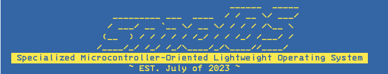
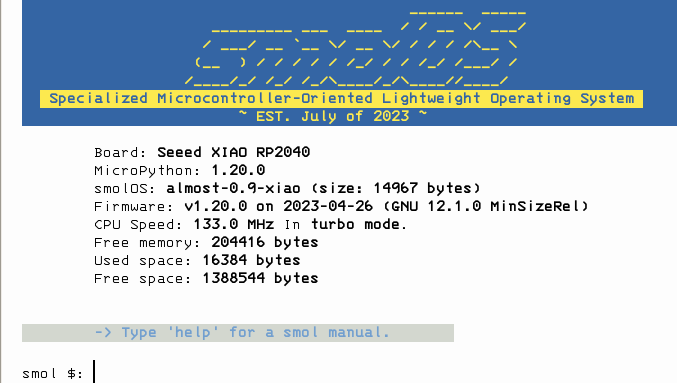
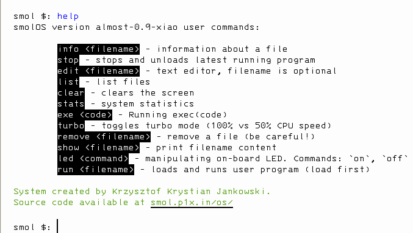
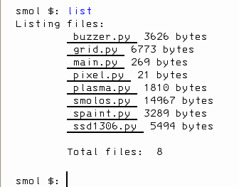
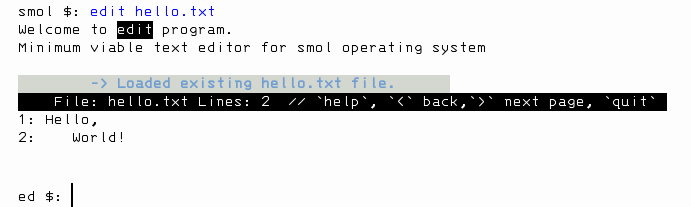

smolOS is a tiny (<20KB, <500LOC) and simple üß™ research ‚öôÔ∏è operating system ‚å®Ô∏è written in üêç MicroPython for microcontrollers giving user a POSIX-like üìÅ environment to play. It came with a set of üß∞ tools and ü™Ñ demos.
According to the Wikipedia: "An operating system (OS) is system software that manages computer hardware and software resources, and provides common services for computer
programs.". In my own mind it's just an interface that helps user interacts with a computer. In that case
smolOS is an operating system. In more precise definition it is a shell and a collection of scripts that works on top of MicroPython systems. Imagine
command.com to the MS-DOS, bash to Linux. For the end user it
really doesn't matter as long as it transforms a blank microcontroller into a working computer.
My first computer was 486 and a black and white CRT. I was using MS-DOS most of the time and get used to the
command line interface. Now, some 25 years later I'm using Linux on all my computers and still prefer shell for basic stuff like editing, moving files or installing software. I wanted to keep that spirit in the smolOS.
Shell. It's not MS-DOS (command.com) nor bash
equivalent, it's something in between. I wanted to keep all the commands user friendly. For
example instead of UNIX ls and DOS dir I opted for list. From those three only the last says exactly what it does - lists files.
Files. Flat hierarchy. Microcontrollers have few MB of data at best. It's not a place to store documents it's a place to store few scripts to run our project. Having directories makes
things more complicated, users get confused where they are and the whole ".." to go back was always strange. That's why there is no
mkdir or cd.
System should run on any MicroPython supported board but it's tested and developed on Seeed XIAO RP2040.

The whole system is in one file smolos.py. There are additional tools and demos that are optional.
All of those are for NeoPixel Grid 5x5 BFF:
Python firmware installation
System installation
$ picocom /dev/ttyACM0
Press ctrl+a+x to exit.
First start. Or after flashing new main.py file. Restart the microcontroller:
>>> machine.soft_reset()
If you copied the main.py after restart the device system should "boot" you into the smolOS. Like so:
If you put only smolos.py then you need to boot the system by hand.
In MicroPython REPL write:
>>> from smolos import smolOS >>> os = smolOS() >>> os.boot()
Write help for quick reference.


Simple text editor is build-in to the system.

esp8266, micropython, os, operating-system, research-project, neopixels, xiao, micropython-esp8266, rp2040, seeeduino-xiao,
seeed, esp